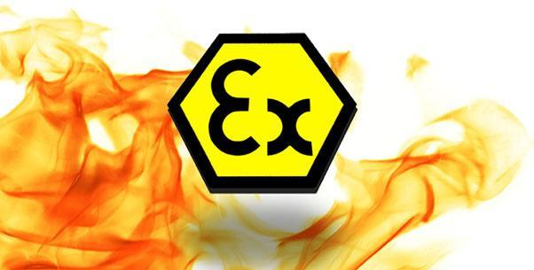

Technical Guide

Installation Guides
How to Install Your Agua Instruments Gas Analyzer: A Step-by-Step Guide.
Read more →
Calibration Procedures
Calibrating Your Water Analyzer: Best Practices for Accurate Results.
Read more →
Maintenance & Troubleshooting
Troubleshooting Your Dust Analyzer: Common Issues and Solutions.
Read more →
System Integration
Integrating Your Auto Sampler with Laboratory Information Management Systems (LIMS).
Read more →
Product Comparisons
Comparing Different TOC Analyzers: Which One is Right for Your Laboratory?
Read more →